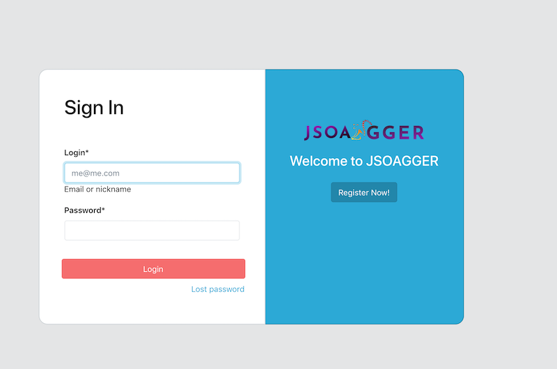

Steps for running demo application
- Install docker and compose for your operating system: https://docs.docker.com/install/
-
Create the following folder structure on your system:
Download the manager configuration file from github: manager/application.properties
Download the server configuration file from github: server/application.properties - Setup environment and variables needed by docker-compose:
1. DB_USER: the h2 database user
2. DB_PASSWORD: the h2 database password
3. DATA_LOCATION: volume where the database file will be stored by docker compose on the host
4. SPRING_CONFIG_LOCATION_MANAGER: folder containing spring boot 'application.properties' mandatory for starting the soagg-manager
5. SPRING_CONFIG_LOCATION_SRV: folder containing spring boot 'application.properties' mandatory for starting the backend server
export DB_USER=sa export DB_PASSWORD= export DATA_LOCATION=./data export SPRING_CONFIG_LOCATION_MANAGER=./manager export SPRING_CONFIG_LOCATION_SRV=./server -
Paste following content into file 'compose-dev.yaml':
version: '3.7' services: soagg-database: image: jsoagger/soagg-h2:1.4.197-1.0.0-nd restart: on-failure ports: - 1521:1521 - 81:81 volumes: - $DATA_LOCATION:/opt/h2-data environment: - DB_USER=$DB_USER - DB_PASSWORD=$DB_PASSWORD networks: - soagg_network soagg-foundation-srv: image: jsoagger/soagg-foundation-srv:latest restart: on-failure ports: - 8080:8080 volumes: - $SPRING_CONFIG_LOCATION_SRV:/spring-config/:ro depends_on: - soagg-database networks: - soagg_network soagg-manager: image: jsoagger/soagg-manager:latest container_name: soagg-manager_1 tty: true stdin_open: true environment: - MANAGED_BACKEND_REST_URL=http://soagg-foundation-srv:8080/jsoagger volumes: - $SPRING_CONFIG_LOCATION_MANAGER:/spring-config/:ro depends_on: - soagg-foundation-srv networks: - soagg_network soagg-webdev: image: jsoagger/soagg-webdev:latest container_name: soagg-webdev ports: - '3000:3000' environment: - NODE_ENV=development - CHOKIDAR_USEPOLLING=true - JSOAGGER_API_URL=http://localhost:8080/jsoagger networks: - soagg_network networks: soagg_network: driver: "bridge" - Start all services with docker compose:
> docker-compose -f compose-dev.yaml up - Load foundation datas:
docker run --rm --name soagg-foundation-data --network=docker-compose_soagg_network \ -v $SPRING_CONFIG_LOCATION_MANAGER:/spring-config/\ jsoagger/soagg-foundation-data:latest - Browse:
http://localhost:3000/#/c/login
http://localhost:81/

Overview
Docker hub
Docker Hub is the world's largest library and community for container images.
All JSoagger official images are published under docker hub automatically from travic-CI.
You can browse all of them from following url : https://hub.docker.com/u/jsoagger
jsoagger/soagg-h2:1.4.197-1.0.0-nd
'soagg-h2' is a customized h2 database server for jsoagger. It includes initialization script for database schema initialization.
soagg-foundation-srv service
'soagg-foundation-srv' is the jsoagger backend server. Based on springboot, it starts an embedded tomcat server on port 8080.
soagg-manager service
'soagg-manager' is the command line interface for managing jsoagger backend server. Built ith spring shell 2.0, it includes more than 60 commands.
soagg-webdev service
'soagg-webdev' is the React.js web ui client on jsoagger.